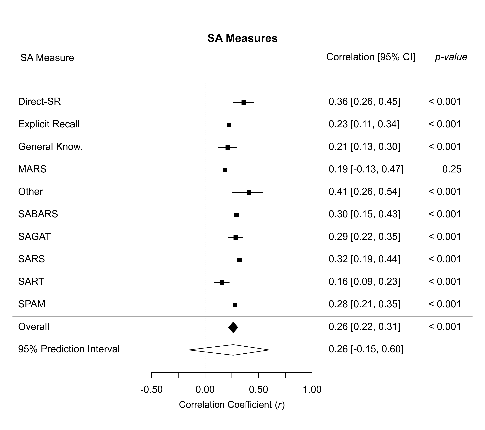

dat.bakdash2021.RdResults from 77 papers with 678 effects evaluating associations among measures of situation awareness and task performance.
dat.bakdash2021The data frame contains the following columns:
| Author | character | paper author(s) |
| Year | integer | year of paper publication |
| Title | character | title of paper |
| DOI | character | digital object identifier (DOI) |
| DTIC.link | character | permanent link for Defense Technical Information Collection (DITC) reports; see: https://www.dtic.mil |
| SA.measure.type | character | type of SA measure |
| Sample.size | integer | reported sample size |
| Sample.size.stats | integer | reported sample size based on reported statistics (this reflects excluded participants) |
| es.z | numeric | z-transformed correlation coefficient; includes ghost results (disclosed and undisclosed non-significant effects not reported in detail) imputed using the draw method described in Bakdash et al. (2021a) |
| vi.z | numeric | variance for z-transformed correlation (calculated using Sample.size.stats, not Sample.size) |
| SampleID | character | unique identifier for each experiment/study |
| Outcome | integer | unique value for each effect size |
The dataset contains behavioral experiments from 77 papers/79 studies with a total of 678 effects, evaluating associations among measures of situation awareness (“knowing what is going on”) and task performance. Examples of situation awareness include knowledge of current vehicle speed in a simulated driving task and location and heading of aircraft in a simulated air traffic control task. Corresponding examples of task performance include “the number of collisions in a simulated driving task” and “subject matter expert rating of conflict management in a simulated air control task” (Bakdash et al. 2021a, p. 2). This dataset and the ‘Examples’ are a highly simplified version of the data and code in Bakdash et al. (2021b; 2021c). The journal article by Bakdash et al. (2021a) describes the systematic review and meta-analysis in detail.
This dataset is used to illustrate multilevel multivariate meta-analytic models for the overall pooled effect and pooled effects by situation awareness measure. We also adjust meta-analytic models using cluster-robust variance estimation / cluster-robust inference with the robust function in metafor. Results are shown graphically in a customized forest plot with a prediction interval (estimated plausible range of individual effects). Last, we create a table summarizing the estimated meta-analytic heterogeneity parameters.
The meta-analytic results show most pooled effect sizes in the positive medium range or less. There was also substantial meta-analytic heterogeneity (estimated systematic variance in true effects), nearing the magnitude of the overall pooled effect. We interpret the meta-analytic results as situation awareness typically having limited validity for task performance (i.e., good situation awareness does not tend to have strong probabilistic links with good performance and vice-versa). More formally, measures of situation awareness do not generally and meaningfully capture cognitive processes and other relevant factors underlying task performance.
The code run-time can be greatly sped-up using a linear algebra library with R that makes use of multiple CPU cores. See: https://www.metafor-project.org/doku.php/tips:speeding_up_model_fitting. To measure the run-time, uncomment these three lines: start.time <- Sys.time(), end.time <- Sys.time(), and end.time - start.time. Run-times on Windows 10 x64 with the Intel Math Kernel Library are:
| CPU | Run-Time (Minutes) | |
| i7-11850H | 2.49 | |
| i7-4770 | 5.38 |
Bakdash, J. Z., Marusich, L. R., Cox, K. R., Geuss, M. N., Zaroukian, E. G., & Morris, K. M. (2021b). The validity of situation awareness for performance: A meta-analysis (Code Ocean Capsule). https://doi.org/10.24433/CO.1682542.v4
Bakdash, J. Z., Marusich, L. R., Cox, K. R., Geuss, M. N., Zaroukian, E. G., & Morris, K. M. (2021c). The validity of situation awareness for performance: A meta-analysis (Systematic Review, Data, and Code). https://doi.org/10.17605/OSF.IO/4K7ZV
Bakdash, J. Z., Marusich, L. R., Cox, K. R., Geuss, M. N., Zaroukian, E. G., & Morris, K. M. (2021a). The validity of situation awareness for performance: A meta-analysis. Theoretical Issues in Ergonomics Science, 1–24. https://doi.org/10.1080/1463922X.2021.1921310
Supplemental materials: https://www.tandfonline.com/doi/suppl/10.1080/1463922X.2021.1921310/suppl_file/ttie_a_1921310_sm5524.docx
psychology, human factors, engineering, correlation coefficients, multilevel models, multivariate models, cluster-robust inference
### copy data into 'dat' and examine data
dat <- dat.bakdash2021
head(dat[c(1,2,6,8:12)])
#> Author Year SA.measure.type Sample.size.stats es.z vi.z
#> 1 Cummings and Guerlain 2007 SPAM 42 0.4623530 0.02564103
#> 2 Cummings and Guerlain 2007 SAGAT 42 0.1498943 0.02564103
#> 3 Durso 1998 SPAM 12 0.3775238 0.11111111
#> 4 Durso 1998 SAGAT 12 0.3932583 0.11111111
#> 5 Durso 2006 SPAM 77 0.1423756 0.01351351
#> 6 Durso 2006 SPAM 80 0.3058401 0.01298701
#> SampleID Outcome
#> 1 Cummings and Guerlain2007 1
#> 2 Cummings and Guerlain2007 2
#> 3 Durso1998 3
#> 4 Durso1998 4
#> 5 Durso 2006 5
#> 6 Durso 2006 6
# \dontrun{
#start.time <- Sys.time()
### load metafor
library(metafor)
### multilevel meta-analytic model to get the overall pooled effect
res.overall <- rma.mv(es.z, vi.z, mods = ~ 1,
random = ~ 1 | SampleID / Outcome,
data = dat,
test = "t")
res.overall
#>
#> Multivariate Meta-Analysis Model (k = 678; method: REML)
#>
#> Variance Components:
#>
#> estim sqrt nlvls fixed factor
#> sigma^2.1 0.0298 0.1725 79 no SampleID
#> sigma^2.2 0.0147 0.1212 678 no SampleID/Outcome
#>
#> Test for Heterogeneity:
#> Q(df = 677) = 1441.6490, p-val < .0001
#>
#> Model Results:
#>
#> estimate se tval df pval ci.lb ci.ub
#> 0.2692 0.0240 11.2329 677 <.0001 0.2222 0.3163 ***
#>
#> ---
#> Signif. codes: 0 ‘***’ 0.001 ‘**’ 0.01 ‘*’ 0.05 ‘.’ 0.1 ‘ ’ 1
#>
### get prediction interval
predict(res.overall)
#>
#> pred se ci.lb ci.ub pi.lb pi.ub
#> 0.2692 0.0240 0.2222 0.3163 -0.1474 0.6858
#>
### cluster-robust variance estimation (CRVE) / cluster-robust inference
res.overall.crve <- robust(res.overall, cluster = SampleID)
res.overall.crve
#>
#> Multivariate Meta-Analysis Model (k = 678; method: REML)
#>
#> Variance Components:
#>
#> estim sqrt nlvls fixed factor
#> sigma^2.1 0.0298 0.1725 79 no SampleID
#> sigma^2.2 0.0147 0.1212 678 no SampleID/Outcome
#>
#> Test for Heterogeneity:
#> Q(df = 677) = 1441.6490, p-val < .0001
#>
#> Number of estimates: 678
#> Number of clusters: 79
#> Estimates per cluster: 1-64 (mean: 8.58, median: 4)
#>
#> Model Results:
#>
#> estimate se¹ tval¹ df¹ pval¹ ci.lb¹ ci.ub¹
#> 0.2692 0.0239 11.2408 78 <.0001 0.2215 0.3169 ***
#>
#> ---
#> Signif. codes: 0 ‘***’ 0.001 ‘**’ 0.01 ‘*’ 0.05 ‘.’ 0.1 ‘ ’ 1
#>
#> 1) results based on cluster-robust inference (var-cov estimator: CR1,
#> approx. t-test and confidence interval, dfs = residual method)
#>
### get prediction interval
res.overall.crve.pred <- predict(res.overall.crve)
res.overall.crve.pred
#>
#> pred se ci.lb ci.ub pi.lb pi.ub
#> 0.2692 0.0239 0.2215 0.3169 -0.1532 0.6916
#>
### multilevel meta-analytic model for SA measures
res.sa <- rma.mv(es.z, vi.z, mods = ~ SA.measure.type - 1,
random = ~ 1 | SampleID / Outcome,
data = dat,
test = "t")
res.sa
#>
#> Multivariate Meta-Analysis Model (k = 678; method: REML)
#>
#> Variance Components:
#>
#> estim sqrt nlvls fixed factor
#> sigma^2.1 0.0314 0.1773 79 no SampleID
#> sigma^2.2 0.0122 0.1104 678 no SampleID/Outcome
#>
#> Test for Residual Heterogeneity:
#> QE(df = 668) = 1238.1070, p-val < .0001
#>
#> Test of Moderators (coefficients 1:10):
#> F(df1 = 10, df2 = 668) = 15.7060, p-val < .0001
#>
#> Model Results:
#>
#> estimate se tval df pval ci.lb ci.ub
#> SA.measure.typeDirect-SR 0.3781 0.1131 3.3437 668 0.0009 0.1561 0.6002 ***
#> SA.measure.typeExplicit Recall 0.2297 0.0732 3.1366 668 0.0018 0.0859 0.3734 **
#> SA.measure.typeGeneral Know. 0.2161 0.0570 3.7941 668 0.0002 0.1043 0.3279 ***
#> SA.measure.typeMARS 0.1904 0.0980 1.9428 668 0.0525 -0.0020 0.3828 .
#> SA.measure.typeOther 0.4345 0.0584 7.4358 668 <.0001 0.3197 0.5492 ***
#> SA.measure.typeSABARS 0.3045 0.0996 3.0570 668 0.0023 0.1089 0.5000 **
#> SA.measure.typeSAGAT 0.2954 0.0330 8.9551 668 <.0001 0.2306 0.3602 ***
#> SA.measure.typeSARS 0.3347 0.1074 3.1172 668 0.0019 0.1239 0.5455 **
#> SA.measure.typeSART 0.1582 0.0392 4.0324 668 <.0001 0.0812 0.2353 ***
#> SA.measure.typeSPAM 0.2884 0.0399 7.2259 668 <.0001 0.2100 0.3667 ***
#>
#> ---
#> Signif. codes: 0 ‘***’ 0.001 ‘**’ 0.01 ‘*’ 0.05 ‘.’ 0.1 ‘ ’ 1
#>
### cluster-robust variance estimation (CRVE) / cluster-robust inference
res.sa.crve <- robust(res.sa, cluster = SampleID)
res.sa.crve
#>
#> Multivariate Meta-Analysis Model (k = 678; method: REML)
#>
#> Variance Components:
#>
#> estim sqrt nlvls fixed factor
#> sigma^2.1 0.0314 0.1773 79 no SampleID
#> sigma^2.2 0.0122 0.1104 678 no SampleID/Outcome
#>
#> Test for Residual Heterogeneity:
#> QE(df = 668) = 1238.1070, p-val < .0001
#>
#> Number of estimates: 678
#> Number of clusters: 79
#> Estimates per cluster: 1-64 (mean: 8.58, median: 4)
#>
#> Test of Moderators (coefficients 1:10):¹
#> F(df1 = 10, df2 = 69) = 99.4115, p-val < .0001
#>
#> Model Results:
#>
#> estimate se¹ tval¹ df¹ pval¹ ci.lb¹ ci.ub¹
#> SA.measure.typeDirect-SR 0.3781 0.0552 6.8448 69 <.0001 0.2679 0.4884 ***
#> SA.measure.typeExplicit Recall 0.2297 0.0608 3.7776 69 0.0003 0.1084 0.3510 ***
#> SA.measure.typeGeneral Know. 0.2161 0.0447 4.8381 69 <.0001 0.1270 0.3052 ***
#> SA.measure.typeMARS 0.1904 0.1629 1.1686 69 0.2466 -0.1346 0.5154
#> SA.measure.typeOther 0.4345 0.0861 5.0486 69 <.0001 0.2628 0.6061 ***
#> SA.measure.typeSABARS 0.3045 0.0759 4.0110 69 0.0002 0.1530 0.4559 ***
#> SA.measure.typeSAGAT 0.2954 0.0375 7.8809 69 <.0001 0.2206 0.3702 ***
#> SA.measure.typeSARS 0.3347 0.0694 4.8208 69 <.0001 0.1962 0.4731 ***
#> SA.measure.typeSART 0.1582 0.0361 4.3805 69 <.0001 0.0862 0.2303 ***
#> SA.measure.typeSPAM 0.2884 0.0383 7.5331 69 <.0001 0.2120 0.3647 ***
#>
#> ---
#> Signif. codes: 0 ‘***’ 0.001 ‘**’ 0.01 ‘*’ 0.05 ‘.’ 0.1 ‘ ’ 1
#>
#> 1) results based on cluster-robust inference (var-cov estimator: CR1,
#> approx. t/F-tests and confidence intervals, dfs = residual method)
#>
### profile likelihood plots
par(mfrow=c(2,1))
profile(res.sa.crve, progbar = FALSE)
### format and combine output of meta-analytic models for the forest plot
all.z <- c(res.sa.crve$beta, # SA measures
res.overall.crve$beta, # pooled effect for confidence interval (CI)
res.overall.crve$beta) # pooled effect for prediction interval (PI)
all.ci.lower <- c(res.sa.crve$ci.lb, # SA measures
res.overall.crve.pred$ci.lb, # pooled effect, lower CI
res.overall.crve.pred$pi.lb) # pooled effect, lower PI
all.ci.upper <- c(res.sa.crve$ci.ub, # SA measures
res.overall.crve.pred$ci.ub, # pooled effect, upper CI
res.overall.crve.pred$pi.ub) # pooled effect, upper PI
### note: there is no p-value for the PI
all.pvals <- c(res.sa.crve$pval, res.overall.crve$pval)
all.labels <- c(sort(unique(dat$SA.measure.type)), "Overall", "95% Prediction Interval")
### function to round p-values for the forest plot
pvals.round <- function(input) {
input <- ifelse(input < 0.001, "< 0.001",
ifelse(input < 0.01, "< 0.01",
ifelse(input < 0.05 & input >= 0.045, "< 0.05",
ifelse(round(input, 2) == 1.00, "0.99",
sprintf("%.2f", round(input, 2))))))}
all.pvals.rounded <- pvals.round(all.pvals)
### forest plot
plot.vals <- data.frame(all.labels, all.z, all.ci.lower, all.ci.upper)
par(mfrow=c(1,1), cex = 1.05)
forest(plot.vals$all.z,
ci.lb = plot.vals$all.ci.lower,
ci.ub = plot.vals$all.ci.upper,
slab = plot.vals$all.labels,
psize = 1,
efac = 0, xlim = c(-1.8, 2.5), clim = c(-1, 1),
transf = transf.ztor, # transform z to r
at = seq(-0.5, 1, by = 0.25),
xlab = expression("Correlation Coefficient"~"("*italic('r')*")"),
main = "\n\n\nSA Measures",
ilab = c(all.pvals.rounded, ""), ilab.xpos = 2.45, ilab.pos = 2.5,
digits = 2, refline = 0, annotate = FALSE)
### keep trailing zero using sprintf
output <- cbind(sprintf("%.2f", round(transf.ztor(plot.vals$all.z), 2)),
sprintf("%.2f", round(transf.ztor(plot.vals$all.ci.lower), 2)),
sprintf("%.2f", round(transf.ztor(plot.vals$all.ci.upper), 2)))
### alignment kludge
annotext <- apply(output, 1, function(x) {paste0(" ", x[1], " [", x[2],", ", x[3], "]")})
text( 1.05, 12:1, annotext, pos = 4, cex = 1.05)
text(-1.475, 14.00, "SA Measure", cex = 1.05)
text( 2.30, 14.00, substitute(paste(italic('p-value'))), cex = 1.05)
text( 1.55, 14.00, "Correlation [95% CI]", cex = 1.05)
abline(h = 1.5)
### black polygon for overall mean CIs
addpoly(all.z[11], ci.lb = all.ci.lower[11], ci.ub = all.ci.upper[11],
rows = 2, annotate = FALSE, efac = 1.5, transf = transf.ztor)
### white polygon for PI
addpoly(all.z[12], ci.lb = all.ci.lower[12], ci.ub = all.ci.upper[12],
rows = 1, col = "white", border = "black",
annotate = FALSE, efac = 1.5, transf = transf.ztor)

par(mfrow=c(1,1), cex = 1) # reset graph parameters to default
### confidence intervals for the variance components
re.CI.variances <- confint(res.overall)
re.CI.variances
#>
#> estimate ci.lb ci.ub
#> sigma^2.1 0.0298 0.0179 0.0490
#> sigma.1 0.1725 0.1338 0.2213
#>
#> estimate ci.lb ci.ub
#> sigma^2.2 0.0147 0.0101 0.0204
#> sigma.2 0.1212 0.1003 0.1429
#>
sigma1.z <- data.frame(re.CI.variances[[1]]["random"])
sigma2.z <- data.frame(re.CI.variances[[2]]["random"])
### fit model using alternative multivariate parameterization
res.overall.alt <- rma.mv(es.z, vi.z, mods = ~ 1,
random = ~ factor(Outcome) | factor(SampleID),
data = dat,
test = "t")
### confidence intervals for the total amount of heterogeneity variance component
res.overall.alt.tau <- confint(res.overall.alt, tau2=1)$random
### I^2: http://www.metafor-project.org/doku.php/tips:i2_multilevel_multivariate
W <- diag(1/dat$vi.z)
X <- model.matrix(res.overall)
P <- W - W %*% X %*% solve(t(X) %*% W %*% X) %*% t(X) %*% W
### I^2 (variance due to heterogeneity): 61%
I2 <- 100 * res.overall.alt$tau2 /
(res.overall.alt$tau2 + (res.overall$k-res.overall$p)/sum(diag(P)))
I2
#> [1] 60.99124
### 95% CI for I^2 using uncertainty around tau^2
I2.CI.lb <- 100 * res.overall.alt.tau[1,2] /
(res.overall.alt.tau[1,2] + (res.overall$k-res.overall$p)/sum(diag(P)))
I2.CI.lb
#> [1] 53.00297
I2.CI.ub <- 100 * res.overall.alt.tau[1,3] /
(res.overall.alt.tau[1,3] + (res.overall$k-res.overall$p)/sum(diag(P)))
I2.CI.ub
#> [1] 69.15562
### total amount of heterogeneity (tau)
sqrt(res.overall.alt$tau2)
#> [1] 0.2108226
### heterogeneity table
table.heterogeneity <- data.frame(matrix(ncol = 3, nrow = 4))
colnames(table.heterogeneity) <- c("Parameter Value",
"Lower 95% CI",
"Upper 95% CI")
rownames(table.heterogeneity) <- c("Tau (Total)",
"Tau1 (Between paper)",
"Tau2 (Within paper)",
"I2 (%)")
table.heterogeneity[1,] <- res.overall.alt.tau[2,]
table.heterogeneity[2,] <- sigma1.z[2,]
table.heterogeneity[3,] <- sigma2.z[2,]
table.heterogeneity[4,] <- c(I2, I2.CI.lb, I2.CI.ub)
round(table.heterogeneity, 2)
#> Parameter Value Lower 95% CI Upper 95% CI
#> Tau (Total) 0.21 0.18 0.25
#> Tau1 (Between paper) 0.17 0.13 0.22
#> Tau2 (Within paper) 0.12 0.10 0.14
#> I2 (%) 60.99 53.00 69.16
#end.time <- Sys.time()
#end.time - start.time
# }